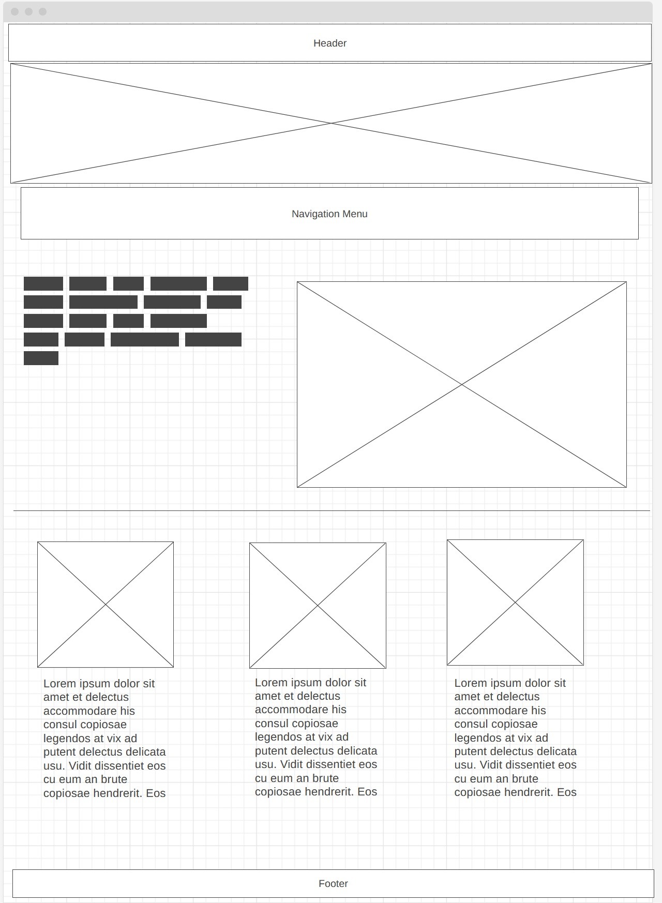
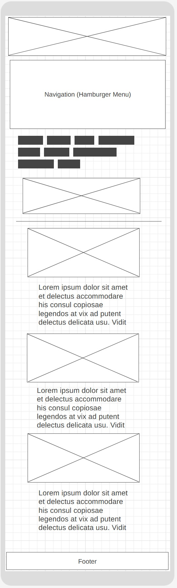

Brandon Cushenberry
San Juan Capistrano Chamber of Commerce
The Chamber of Commerce for San Juan Capistrano aims to introduce and promote local businesses to the greater population, and to educate business owners through workshops and seminars to help chamber members grow their business.
Below are some sample scenarios that this webpage hopes to address.
Earthy colors will be used to reflect the earthy feel of the town's buildings and scenery.
This list is by no means final, but simply some ideas.
Below are two fonts for the site. The first font, Montserrat, will be used as the main font across the site, including in the header and for the larger text. The other font (currently Karla) may or may not be used. (Honestly, I'm on the fence about it, and want to check even more fonts.) This secondary font would be used for smaller text, such as that used below images and/or headlines.

